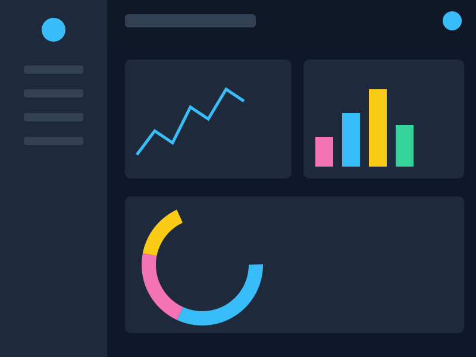

About
I design intuitive, accessible digital experiences — from wireframes and prototypes to polished front-end builds. Below is my resume, followed by a gallery of recent projects. Click any thumbnail to view the full-size piece.
Experience
- Freelance UX/Web Designer — 2023–present. Wireframes, prototypes, and responsive site builds for small business clients.
- UX Design Intern, Bright Path Studio — Summer 2023. User research, wireframing, and usability testing on client web projects.
Skills
HTML & CSS, wireframing & prototyping, user research, responsive layout, Figma, Adobe XD.
Work Samples
Click a thumbnail below to see the full image on its own page.
-

Analytics Dashboard UI -

Peak & Pine Logo -

Summer Jazz Night Poster